Dataset:
| \(x_1\) | \(x_2\) |
|---|---|
| −2 | −1 |
| −1 | 0 |
| 0 | 1 |
| 1 | 2 |
| 2 | 3 |
Subtract the mean:
\[ \begin{aligned} x_{1i}' &= x_{1i} - \mu(x_1) \\ x_{2i}' &= x_{2i} - \mu(x_2) \end{aligned} \]| \(x_1'\) | \(x_2'\) |
|---|---|
| −2 | −2 |
| −1 | −1 |
| 0 | 0 |
| 1 | 1 |
| 2 | 2 |
The means are now zero, so
\[ \hat{\Sigma} = \frac{1}{N} \sum_{n=1}^{N} x_n x_n^T - \hat{m}\hat{m}^T \]becomes
\[ \begin{aligned} \hat{\Sigma} &= \frac{1}{N} \sum_{n=1}^{N} x_n x_n^T \\ &= \frac{1}{5} \left( \begin{bmatrix} -2 \\ -2 \end{bmatrix} \begin{bmatrix} -2 & -2 \end{bmatrix} + \begin{bmatrix} -1 \\ -1 \end{bmatrix} \begin{bmatrix} -1 & -1 \end{bmatrix} + \begin{bmatrix} 0 \\ 0 \end{bmatrix} \begin{bmatrix} 0 & 0 \end{bmatrix} + \begin{bmatrix} 1 \\ 1 \end{bmatrix} \begin{bmatrix} 1 & 1 \end{bmatrix} + \begin{bmatrix} 2 \\ 2 \end{bmatrix} \begin{bmatrix} 2 & 2 \end{bmatrix} \right) \\ &= \frac{1}{5} \left( \begin{bmatrix} 4 & 4 \\ 4 & 4 \end{bmatrix} + \begin{bmatrix} 1 & 1 \\ 1 & 1 \end{bmatrix} + \begin{bmatrix} 0 & 0 \\ 0 & 0 \end{bmatrix} + \begin{bmatrix} 1 & 1 \\ 1 & 1 \end{bmatrix} + \begin{bmatrix} 4 & 4 \\ 4 & 4 \end{bmatrix} \right) \\ &= \frac{1}{5} \begin{bmatrix} 10 & 10 \\ 10 & 10 \end{bmatrix} \end{aligned} \] \[ \hat{\Sigma} = \begin{bmatrix} 2 & 2 \\ 2 & 2 \end{bmatrix} \]Normalize:
\[ v_1 = \begin{bmatrix} \frac{1}{\sqrt{2}} \\ \frac{1}{\sqrt{2}} \end{bmatrix} \]Normalize:
\[ v_2 = \begin{bmatrix} \frac{1}{\sqrt{2}} \\ -\frac{1}{\sqrt{2}} \end{bmatrix} \]Project the point onto the first PC, \(v_1 = \begin{bmatrix} \frac{1}{\sqrt{2}} \\ \frac{1}{\sqrt{2}} \end{bmatrix}\):
\[ \begin{aligned} y &= v_1^T (x - \hat{m}) \\ &= \begin{bmatrix} \frac{1}{\sqrt{2}} & \frac{1}{\sqrt{2}} \end{bmatrix} \left( \begin{bmatrix} 3 \\ 3 \end{bmatrix} - \begin{bmatrix} 0 \\ 1 \end{bmatrix} \right) \\ &= \begin{bmatrix} \frac{1}{\sqrt{2}} & \frac{1}{\sqrt{2}} \end{bmatrix} \begin{bmatrix} 3 \\ 2 \end{bmatrix} \\ y &= \frac{5}{\sqrt{2}} \end{aligned} \]Reconstruct:
\[ \begin{aligned} \hat{x} &= \hat{m} + v_1 y \\ &= \begin{bmatrix} 0 \\ 1 \end{bmatrix} + \begin{bmatrix} \frac{1}{\sqrt{2}} \\ \frac{1}{\sqrt{2}} \end{bmatrix} \cdot \frac{5}{\sqrt{2}} \\ &= \begin{bmatrix} 0 \\ 1 \end{bmatrix} + \begin{bmatrix} \frac{5}{2} \\ \frac{5}{2} \end{bmatrix} \\ \hat{x} &= \begin{bmatrix} 2.5 \\ 3.5 \end{bmatrix} \end{aligned} \]L2 norm:
\[ \begin{aligned} \text{Error} &= \lVert x - \hat{x} \rVert_2 \\ &= \sqrt{(x_1 - \hat{x}_1)^2 + (x_2 - \hat{x}_2)^2} \\ &= \sqrt{(3 - 2.5)^2 + (3 - 3.5)^2} \\ \text{Error} &= \frac{1}{\sqrt{2}} \end{aligned} \]Project the point onto the first PC, \(v_1 = \begin{bmatrix} \frac{1}{\sqrt{2}} \\ \frac{1}{\sqrt{2}} \end{bmatrix}\):
\[ \begin{aligned} y &= v_1^T (x - \hat{m}) \\ &= \begin{bmatrix} \frac{1}{\sqrt{2}} & \frac{1}{\sqrt{2}} \end{bmatrix} \left( \begin{bmatrix} 3 \\ 4 \end{bmatrix} - \begin{bmatrix} 0 \\ 1 \end{bmatrix} \right) \\ &= \begin{bmatrix} \frac{1}{\sqrt{2}} & \frac{1}{\sqrt{2}} \end{bmatrix} \begin{bmatrix} 3 \\ 3 \end{bmatrix} \\ y &= \frac{6}{\sqrt{2}} = 3\sqrt{2} \end{aligned} \]Reconstruct:
\[ \begin{aligned} \hat{x} &= \hat{m} + v_1 y \\ &= \begin{bmatrix} 0 \\ 1 \end{bmatrix} + \begin{bmatrix} \frac{1}{\sqrt{2}} \\ \frac{1}{\sqrt{2}} \end{bmatrix} \cdot 3\sqrt{2} \\ &= \begin{bmatrix} 0 \\ 1 \end{bmatrix} + \begin{bmatrix} 3 \\ 3 \end{bmatrix} \\ \hat{x} &= \begin{bmatrix} 3 \\ 4 \end{bmatrix} \end{aligned} \]L2 norm:
Since \(x = \hat{x}\),
\[ \text{Error} = 0 \]The following plot marginalizes the first feature, sepal length, onto a single axis, with different colours representing the different classes.
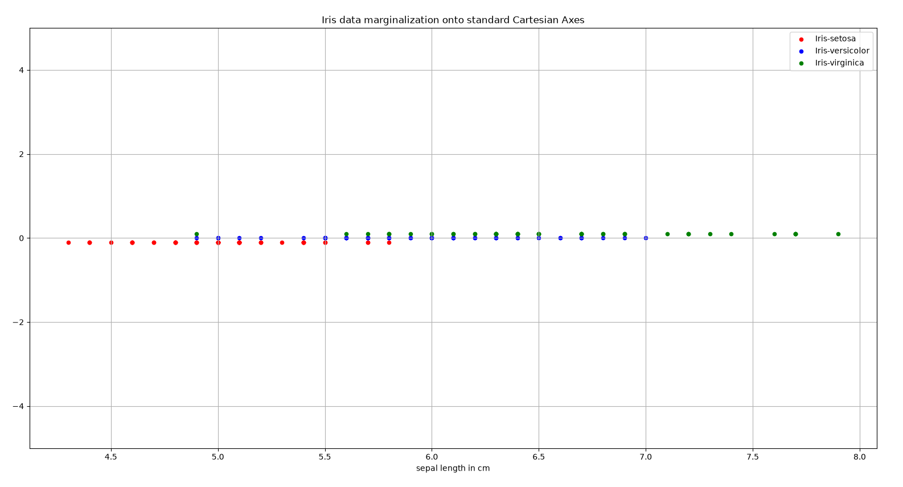
For this feature only, a boundary can be established between Iris Setosa and Iris Virginica. Otherwise, there's too much overlap between the classes to establish a clear boundary.
The following plot marginalizes the first feature, sepal length, onto the x-axis, and the second feature, sepal width, onto the y-axis. Different colours represent the different classes.
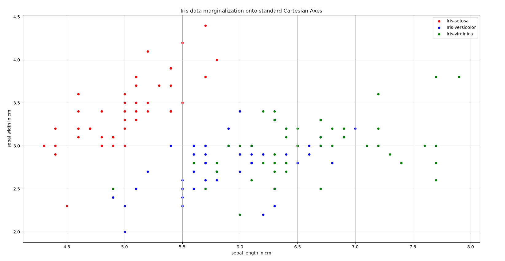
For this marginalization, Iris Setosa is clearly its own cluster. However, there's a lot of overlap between Iris Versicolor and Iris Virginica that classification is much more uncertain. Despite that, there are still some regions that are distinctly Iris Versicolor or Iris Virginica.
The following plot marginalizes the first feature, sepal length, onto the x-axis, the second feature, sepal width, onto the y-axis and the third feature, petal length, onto the z-axis. Different colours represent the different classes.
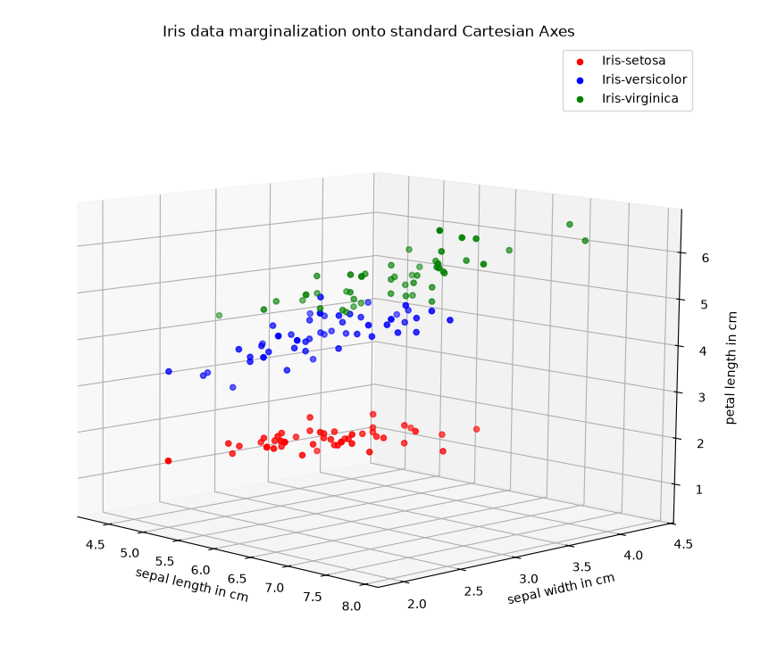
In this marginalization, there are clear, distinct clusters for Iris Setosa, Iris Versicolor and Iris Virginca.
Following the basic data marginalization, PCA was performed on the dataset, and then marginalized once more onto the Principal Components.
These are the first three principal components that describe the data:
\[ V_1 = \begin{bmatrix} 0.3616 \\ -0.0823 \\ 0.8566 \\ 0.3588 \end{bmatrix} \qquad V_2 = \begin{bmatrix} 0.6565 \\ 0.7297 \\ -0.1758 \\ -0.0747 \end{bmatrix} \qquad V_3 = \begin{bmatrix} -0.5810 \\ 0.5964 \\ 0.0725 \\ 0.5491 \end{bmatrix} \]The following plot marginalizes the Iris data onto the 1st Principal Component, with different colours representing the different classes.
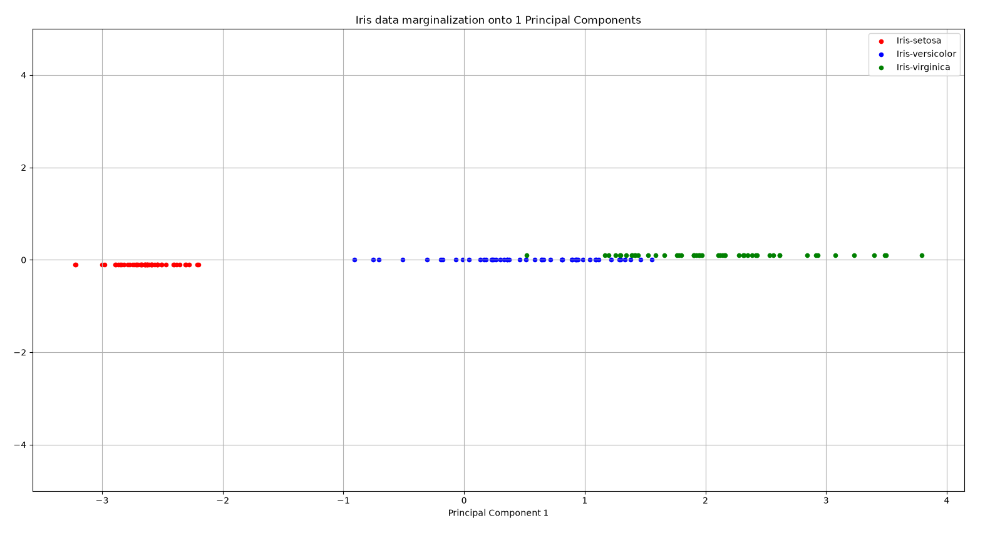
The following plot marginalizes the Iris data onto the first two Principal Components, with different colours representing the different classes.
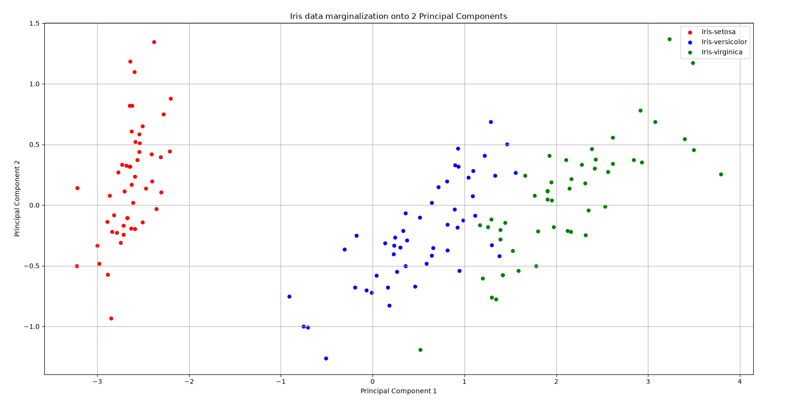
The following plot marginalizes the Iris data onto the first three Principal Components, with different colours representing the different classes.
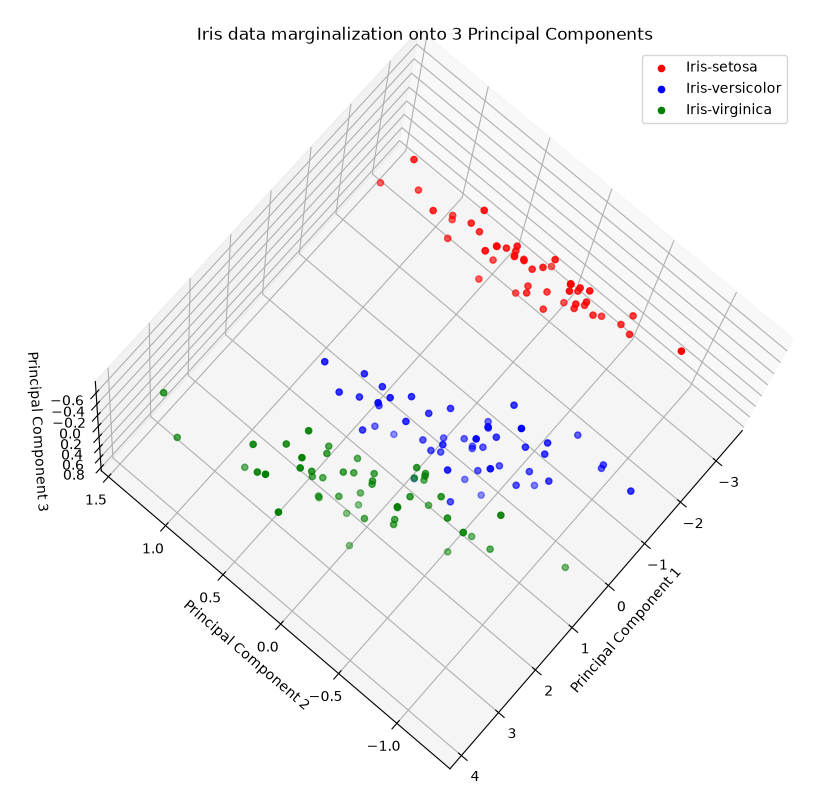
As can be seen in the plots, following PCA, the clustering of classes is a lot clearer, even as early as the 1D marginalization.
Using scikit's PCA explained_variance_ratio_ attribute, we get that PC1 accounts for 0.92461621, or 92.56% of the variance, and PC2 accounts for 0.05301557, or 5.30% of the variance. So in total, they explain 97.86% of the variance in the data.
From above, we know that 1 Principal Component is enough to explain 50% of the variance in the data.
To see if a non-linear compression algorithm would fit the data better, ISOMAP was run on the Iris data.
The following are the marginalized plots for 1, 2 and 3 components:
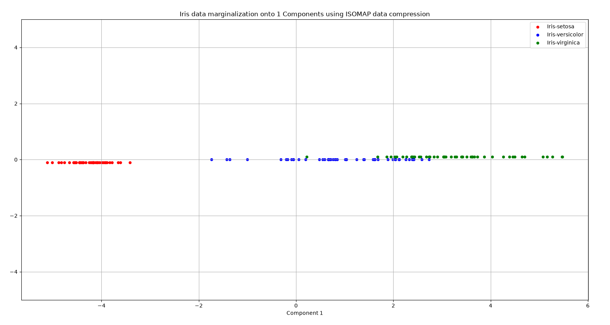
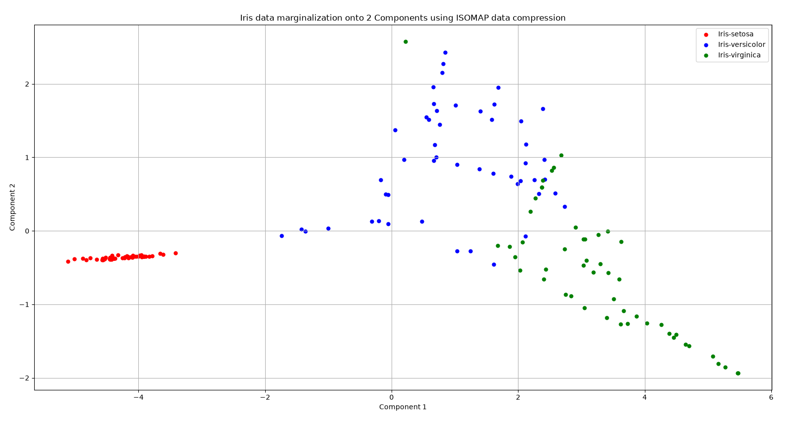
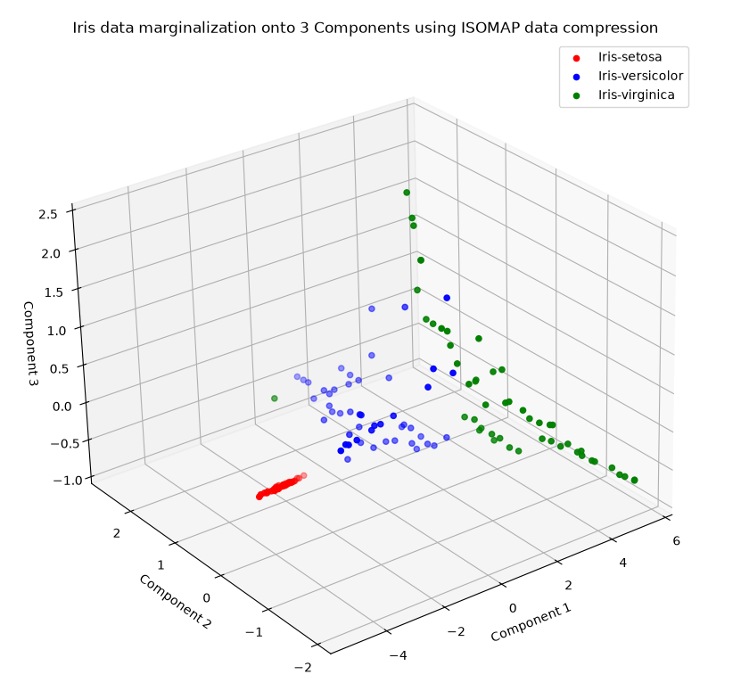
The ISOMAP reconstruction errors for 1D, 2D and 3D are as follows:
\[ 1D: 0.9666 \qquad 2D: 0.4364 \qquad 3D: 0.2973 \]Comparing the clustering of classes between PCA and ISOMAP, they're both very similar in terms of how distinct the class clusters are. However, PCA has slightly less overlap between classes than ISOMAP, especially for 1 Component.
Furthermore, when comparing PCA's explained variance for each successive component added, and ISOMAP's reconstruction error for each successive component, it would seem that ISOMAP is more lossy in compression. One component in PCA explains over 92% of the variance, while one component in ISOMAP has over 0.96 reconstruction error. So overall, PCA would be preferable for this dataset.
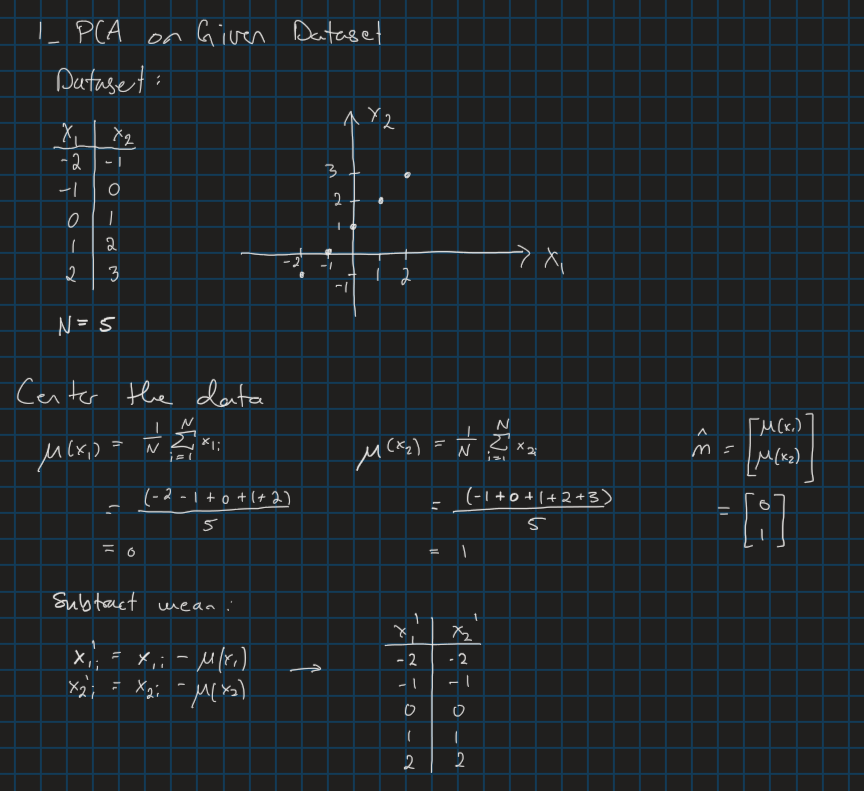
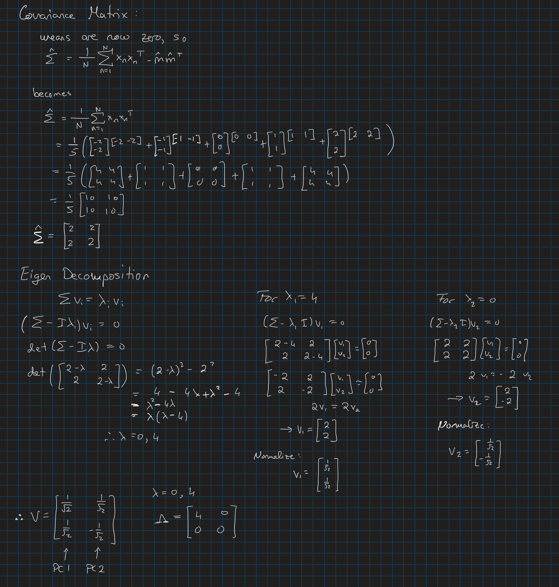
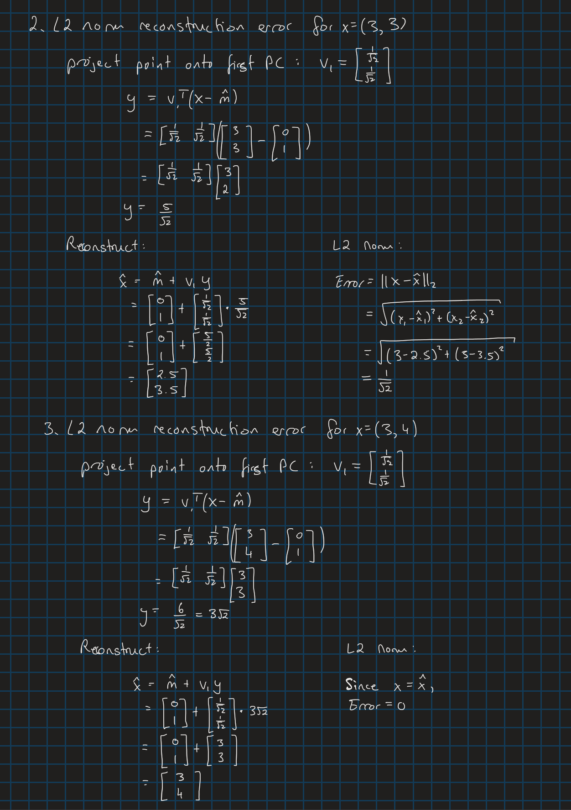